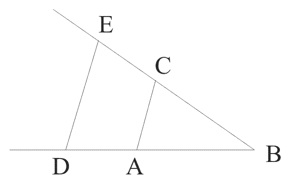

Supplement to Analysis
Early Modern Conceptions of Analysis
- 1. Introduction
- 2. Descartes and Analytic Geometry
- 3. British Empiricism
- 4. Leibniz
- 5. Kant
- 6. Indian Analytic Philosophy
- 7. Dai Zhen and Chinese Philological Analysis
- 8. Conclusion
1. Introduction
This supplement sketches how a reductive form of analysis emerged in Descartes’s development of analytic geometry, and elaborates on the way in which decompositional conceptions of analysis came to the fore in European philosophy in the early modern period, as outlined in §4 of the main document. Set against these developments in Europe is the emergence of what can rightly be described as a form of analytic philosophy in India, several centuries before its appearance in Europe. A brief comparison is also made with the tradition of philological analysis in China, which reached a highpoint in the work of Dai Zhen.
2. Descartes and Analytic Geometry
In a famous passage in his replies to Mersenne’s objections to the Meditations, in discussing the distinction between analysis and synthesis, Descartes remarks that “it is analysis which is the best and truest method of instruction, and it was this method alone which I employed in my Meditations” (PW, II, 111 {Full Quotation}). According to Descartes, it is analysis rather than synthesis that is of the greater value, since it shows “how the thing in question was discovered”, and he accuses the ancient geometers of keeping the techniques of analysis to themselves “like a sacred mystery” (ibid.; cf. PW, I, 17 {Quotation}). Euclid’s Elements is indeed set out in ‘synthetic’ form, but it is unfair to suggest that someone who worked through the text would not gain practice in analysis, although admittedly there are no rules of analysis explicitly articulated.
However, it was Descartes’s own development of ‘analytic’ geometry—as opposed to what, correspondingly, then became known as the ‘synthetic’ geometry of Euclid—that made him aware of the importance of analysis, and which opened up a whole new dimension to analytic methodology. Significantly, Descartes’s Geometry was first published together with the Discourse and advertised as an essay in the method laid out in the Discourse. The Geometry opens boldly: “Any problem in geometry can easily be reduced to such terms that a knowledge of the lengths of certain straight lines is sufficient for its construction.” (G, 2) Descartes goes on to show how the arithmetical operations of addition, subtraction, multiplication, division and the extraction of roots can be represented geometrically. For example, multiplication of two lines BD and BC can be carried out by joining them as in the diagram below by AC, with AB taken as the unit length. If DE is then drawn parallel to AC, BE is the required result. (Since the ratio of BD to BE is the same as the ratio of AB to BC, the two triangles BDE and BAC being similar, BD × BC = AB × BE = BE, if AB is the unit length.)

Problems can indeed then be broken down into simpler problems involving the construction of individual straight lines, encouraging the decompositional conception of analysis. But what is of greatest importance in Descartes’s Geometry is the use made of algebra. Although the invention of algebra too can be traced back to the ancient Greeks, most notably, Diophantus, who had introduced numerical variables (‘x’, ‘x²’, etc.), it was only in the sixteenth century that algebra finally established itself. Vieta, in a work of 1591, added schematic letters to numerical variables, so that quadratic equations, for example, could then be represented (in the form ‘ax² + bx + c = 0’), yielding results of greater generality. Algebra was specifically called an ‘art of analysis’, and it was in the work of Descartes (as well as Fermat) that its enormous potential was realised. It did indeed prove a powerful tool of analysis, enabling complex geometrical figures to be represented algebraically, allowing the resources of algebra and arithmetic to be employed in solving the transformed geometrical problems.
The philosophical significance was no less momentous. For in reducing geometrical problems to arithmetical and algebraic problems, the need to appeal to geometrical ‘intuition’ was removed. Indeed, as Descartes himself makes clear in ‘Rule Sixteen’, representing everything algebraically—abstracting from specific numerical magnitudes as well as from geometrical figures—allows us to appreciate just what is essential (PW, I, 66–9.) The aim is not just to solve a problem, or to come out with the right answer, but to gain an insight into how the problem is solved, or why it is the right answer. What algebraic representation reveals is the structure of the solution in its appropriate generality. (Cf. Gaukroger 1989, ch. 3.) Of course, ‘intuition’ is still required, according to Descartes, to attain the ‘clear and distinct’ ideas of the fundamental truths and relations that lie at the base of what we are doing, but this was not seen as something that we could just appeal to without rigorous training in the whole Cartesian method.
The further application of algebraic techniques, in the context of the development of function theory, was to lead to the creation by Leibniz and Newton of the differential and integral calculus—which, in mathematics, came to be called ‘analysis’. In turn, it was the project of rigorizing the calculus in the nineteenth century that played a key role in the work of Frege and Russell, in which function theory was extended to logic itself and European analytic philosophy emerged (see §6 of the main document).
3. British Empiricism
The decompositional conception of analysis, as applied to ideas or concepts, was particularly characteristic of British empiricism. As Locke put it, “all our complex Ideas are ultimately resolvable into simple Ideas, of which they are compounded, and originally made up, though perhaps their immediate Ingredients, as I may so say, are also complex Ideas” (Essay, II, xxii, 9 {Full Quotation}). The aim was then to provide an account of these ideas, explaining how they arise, showing what simpler ideas make up our complex ideas (e.g., of substance) and distinguishing the various mental operations performed on them in generating what knowledge and beliefs we have. Locke only uses the term ‘Analysis’, however, once in the entire Essay (shortly after the remark just quoted). Perhaps he was conscious of its meaning in ancient Greek geometry, making him hesitant to use it more widely, but it is still significant that when he does, he does so in precisely the sense of ‘decomposition’ {Quotation}. Locke tends to talk, though, of ‘combining’ or ‘composing’ rather than ‘synthesizing’ complex ideas from simpler ideas, and of ‘separating’ or ‘resolving’ rather than ‘analysing’ them into simpler ideas. But in the period following Locke, ‘analysis’ came to be used more and more for the process of ‘resolving’ complexes into their constituents.
4. Leibniz
Leibniz occupies a pivotal point in the history of conceptions of analysis. Well versed in both classical and modern thought, at the forefront of both mathematics and philosophy, he provided a grand synthesis of existing conceptions of analysis and at the same time paved the way for the dominance of the decompositional conception in European philosophy. The key to all of this is what can be called his containment principle. In a letter to Arnauld, he writes: “in every affirmative true proposition, necessary or contingent, universal or singular, the notion of the predicate is contained in some way in that of the subject, praedicatum inest subjecto. Or else I do not know what truth is.” (PW, 62; cf. PT, 87–8 {Quotation}.) If this containment of the predicate in the subject could then be made explicit, according to Leibniz, a proof of the proposition could thereby be achieved. Proof thus proceeds by analysing the subject, the aim being to reduce the proposition to what Leibniz calls an ‘identity’—by successive applications of the rule of ‘substitution of equivalents’, utilizing an appropriate definition. A proposition expresses an identity, in Leibniz’s terminology, if the predicate is explicitly either identical with or included in the subject (cf. PT, 87–8 {Quotation}). The following proof of ‘4 = 2 + 2’ illustrates the procedure (cf. Leibniz NE, IV, vii, 10):
(a) 4 = 2 + 2 (b) 3 + 1 = 2 + 2 (by the definition ‘4 = 3 + 1’) (c) (2 + 1) + 1 = 2 + 2 (by the definition ‘3 = 2 + 1’) (d) 2 + (1 + 1) = 2 + 2 (by associativity) (e) 2 + 2 = 2 + 2 (by the definition ‘2 = 1 + 1’)
The final line of the proof is an ‘identity’ in Leibniz’s sense, and the important point about an identity is that it is ‘self-evident’ or ‘known through itself’, i.e., can be simply ‘seen’ to be true (cf. Leibniz PW, 15; LP, 62). It would be tempting to talk here of identities being ‘intuited’ as true, but Leibniz tends to use the word ‘intuition’ for the immediate grasp of the content of a concept (cf. MKTI, 23–7), whereas the point about knowing the truth of identities is that we can do so without grasping the content of any of the terms. To the extent that we can still judge that such a proposition is true, our knowledge is what Leibniz calls ‘blind’ or ‘symbolic’ rather than ‘intuitive’ (ibid., 25).
Indeed, it was precisely because proofs could be carried out without appeal to intuition that Leibniz was so attracted to the symbolic method. As he remarked in the New Essays, the great value of algebra, or the generalized algebra that he called the ‘art of symbols’, lay in the way it ‘unburdens the imagination’ (NE, 488). If proofs could be generated purely mechanically, then they were freed from the vagaries of our own mental processes (cf. NE, 75, 412). For Leibniz, the status of a proposition—its truth or falsity, necessity or contingency—was dependent not on its mode of apprehension (as it was for Descartes and Locke), which could vary from person to person, but on its method of proof, which was an objectively determinable matter.
Leibniz’s conception of analysis can thus be seen as combining aspects of Plato’s method of division, in the centrality accorded to the definition of concepts, of ancient Greek geometry and Aristotelian logic, in the emphasis placed on proof and working back to first principles, and of Cartesian geometry and the new algebra, in the value attributed to symbolic formulations. Furthermore, we can see how, on Leibniz’s view, analysis and synthesis are strictly complementary (cf. USA, 16–17 {Quotation}). For since we are concerned only with identities, all steps are reversible. As long as the right notation and appropriate definitions and principles are provided, one can move with equal facility in either an ‘analytic’ or a ‘synthetic’ direction, i.e., in the example above, either from (a) to (e) or from (e) to (a). If a characteristica universalis or ideal logical language could thus be created, we would have a system that could function not only as an international language and scientific notation but also as a calculus ratiocinator that provided both a logic of proof and a logic of discovery. Leibniz’s vision may have been absurdly ambitious, but the ideal was to influence many subsequent philosophers, most notably, Frege and Russell.
5. Kant
The decompositional conception of analysis, as applied to concepts, reached its high-point in the work of Kant, although it has continued to have an influence ever since, most notably, in Russell’s and Moore’s early philosophies (see the supplementary sections on Russell and Moore). As his pre-critical writings show, Kant simply takes over the Leibnizian decompositional conception of analysis, and even though, in his critical period, he comes to reject the Leibnizian view that all truths are, in Leibniz’s sense, ‘analytic’, he retains the underlying decompositional conception of analysis. He simply recognizes a further class of ‘synthetic’ truths, and within this, a subclass of ‘synthetic a priori’ truths, which it is the main task of the Critique of Pure Reason to elucidate.
As the ‘Introduction’ to the Critique shows (A6–7/B10–11), the decompositional conception of analysis lies at the base of Kant’s distinction between analytic and synthetic judgements. We can formulate Kant’s ‘official’ criterion for analyticity as follows:
(ANO) A true judgement of the form ‘A is B’ is analytic if and only if the predicate B is contained in the subject A.
The problem with this criterion, though, or at least, with the way that Kant glosses it, is obvious. For who is the judge of whether a predicate is or is not ‘contained’—however ‘covertly’—in the subject? According to Leibniz, for example, all truths, even contingent ones, are ‘analytic’: it is just that, in the case of a contingent truth, only God can know what is ‘covertly contained’ in the subject, i.e., know its analysis. Kant’s talk of the connection between subject and predicate in analytic judgements being ‘thought through identity’, however, suggests a more objective criterion—a logical rather than phenomenological one. This is made more explicit later on in the Critique, when Kant specifies the principle of contradiction as ‘the highest principle of all analytic judgements’ (A150–1/B189–91). The alternative criterion can be formulated thus:
(ANL) A true judgement of the form ‘A is B’ is analytic if and only if its negation ‘A is not B’ is self-contradictory.
However, in anything other than trivial cases (such as Leibnizian ‘identities’), it will still require ‘analysis’ to show that ‘A is not B’ is self-contradictory, and for any given step of ‘analysis’, it seems that we would still have to rely on what is ‘thought’ in the relevant concept. So it is not clear that (ANL) is an improvement within Kant’s system.
Whatever criterion we might offer to capture Kant’s notion of analyticity of judgements, the fundamental point of contrast between ‘analytic’ and ‘synthetic’ judgements, rooted in the decompositional conception of analysis, lies in the former merely ‘clarifying’ and the latter ‘extending’ our knowledge. It was for this reason that Kant regarded mathematical propositions as synthetic, since he was convinced—rightly—that mathematics advances our knowledge. This is made clear in chapter 1 of the ‘Transcendental Doctrine of Method’ (CPR, A716–7/B744–5), where Kant argues that no amount of ‘analysis’ of the concept of a triangle will enable a philosopher to show that the sum of the angles of a triangle equals two right angles {Quotation}. It takes a geometer to demonstrate this, by actually constructing the triangle and drawing appropriate auxiliary lines (as Euclid does in I, 32 of the Elements). Kant writes that “To construct a concept means to exhibit a priori the intuition corresponding to it” (A713/B741); and such ‘intuition’ is also needed in constructing the auxiliary lines. According to Kant, then, the whole process is one of synthesis. ‘Analysis’, with respect to concepts, is left with such a small role to play that it is not surprising that it is condemned as useless.
It may appear that Kant has simply inverted the original conception of analysis in ancient Greek geometry—or at least collapsed together into ‘synthesis’ what had previously been distinguished—since the two activities mentioned above are both part of what the ancient geometers called analysis (see the supplementary section on Ancient Greek Geometry). Yet the story is complicated somewhat by Kant’s own distinguishing between two notions of analysis. In his pre-critical Inaugural Dissertation, Kant draws a distinction between analysis understood as “a regression from that which is grounded to the ground” and analysis understood as “a regression from a whole to its possible or mediate parts ... a subdivision of a given compound” (TP 2: 388 n.). The distinction here is clearly between regressive analysis and decompositional analysis, and it is a distinction that Kant maintains in his critical works. Thus, he describes the method of his Prolegomena to Any Future Metaphysics as analytic or ‘regressive’, meaning “that one proceeds from that which is sought as if it were given, and ascends to the conditions under which alone it is possible” (PFM 4: 276 n.). Exemplifying this method, Kant assumes the synthetic cognitions of pure mathematics, geometry in particular, as true and works his way back to what he takes to be the a priori principles of the human cognitive capacities that make these cognitions possible. From these principles, it is then possible, according to Kant, to work one’s way, using the synthetic or progressive method (as exemplified in CPR), up to cognition, e.g., pure mathematical cognition. With his conception of the analytic method, we see Kant holding onto, and giving a classic statement of, what Pappus had called theoretical analysis (see the supplementary section on Ancient Greek Geometry).
6. Indian Analytic Philosophy
A strong case can be made that ‘analytic’ philosophy, in a sense that would be recognized today, developed in India several centuries before it did in Europe. The case for this was built up by the pioneering work of Bimal Krishna Matilal (1986, 1990, 1998a, 2001, 2005), in work dating back to the 1960s, and stated explicitly and powerfully by Jonardon Ganeri in his entry on Analytic Philosophy in Early Modern India (see also Ganeri 1999, 2001b, 2011). {Quotation}} The focus here is on the forms of analysis involved that justify calling this Indian tradition ‘analytic’ in the modern sense.
The founding text of (early modern) Indian analytic philosophy was Gaṅgeśa’s Jewel of Reflection on the Truth (Tattvacintāmaṇi), dating from the early fourteenth century, which defended the ideas of the early Nyāya school from the sceptical attacks of the Buddhist epistemologists, and hence became known as the Navya-Nyāya or new Nyāya school. The ideas were elaborated by successive thinkers over the next four centuries, most notably, by Raghunātha, Jagadīśa, and Gadādhara. An exposition of Gadādhara’s views was given in Annambhaṭṭa’s The Manual of Reason (Tarkasaṃgraha), on which Ganeri primarily bases his account in Analytic Philosophy in Early Modern India. The eleven topics that Ganeri discusses would all be recognized by any analytic philosopher today as central to their own concerns: the theory of categories and definition; physical substance; space, time and motion; selves; philosophical psychology; causation; perception; logical inference; meaning and understanding; universals; ontology. Concepts are explicitly defined, tested, and refined; positions are carefully formulated, with increasingly technical language, and objections raised and answered, as appropriate; and there is a strong sense of aiming for ‘truth’, as reflected in the very title of Gaṅgeśa’s founding text.
Gaṅgeśa’s aim was to defend the fundamental claim of the Nyāya school that the ‘highest good’ is reached when we understand the nature of good reasoning and the sources of knowledge, as famously stated in the opening of the Nyāya-sūtra. {Quotation} A natural way to proceed would be to identify the things we know and then investigate how we came to know them. But this presupposes that we can identify the things we know, which is precisely what is at issue, as the (Buddhist) sceptics had pressed against the Nyāya school. And if we retreat to a more modest position, that we merely need to identify true beliefs, then the sceptical question still arises as to how we can distinguish between true and false beliefs. A range of views were developed in response to these fundamental questions, views that became increasingly sophisticated as the debate proceeded (for discussion, see Ganeri 2011, Part III). The comparison between this debate and the ongoing debate about defining knowledge in modern (Western) analytic philosophy is striking. Analysis as seeking to define a concept by formulating necessary and sufficient conditions, testing any candidate definition by examples and counterexamples, and revising accordingly, is as basic to Indian epistemology as it is to analytic epistemology today.
Let us return to the basic inference-form of Indian logic—in its three-membered version—to give a second example of how the Navya-Nyāya school developed their analytic methodology:
(1) Thesis (pakṣa): That mountain is fire-possessing. (p has s)
(2) Reason (hetu): That mountain is smoke-possessing. (p has h)
(3) Pervasion (vyāpti): Whatever is smoke-possessing is fire-possessing. (Whatever has h has s)
As noted in the supplementary section on Medieval Indian Philosophy, there are two relations here, the relation of possession and the relation of pervasion. The first is the more fundamental relation, and Indian logic has indeed been described as a logic of property possession (Bhattacharyya 1987, Matilal 1998). But ‘property’ here has to be understood in a broader sense than is usual in English. For to say that p has s (the sādhya), on the Indian view, is to say that p is the locus in which s occurs, so that the converse relation here is occurrence. To say that a pot is on the table, for example, is to say that the table is the locus in which a pot occurs, i.e., that the table is pot-possessing. So here the pot is understood as a ‘property’ of the table. This is captured—or underwritten—by a rule of grammar that the Navya-Nyāya logicians formulated, following Pāṇini’s grammar. According to this rule, one determines the sādhya of an inference, where the ‘thesis’ is of the form ‘p is s-possessing’, by dropping the suffix ‘-possessing’, so that the ‘properties’ in the two examples just given would be ‘fire’ and ‘pot’, respectively. Elaborate theories were developed in identifying and clarifying what all the various ‘properties’ are, rooted in the relevant rules of Sanskrit grammar. Again, to give just one example, if a table is pot-possessing, then that table can be referred to by the name ‘that pot-possessing [thing]’. The floor on which the table stands can then be described as ‘[that] (pot-possessing)-possessing’, and so on. (For discussion, see Bhattacharyya 1987.)
As far as the relation of pervasion is concerned, it is important to appreciate that this is more complicated than just a relation between h and s: it is a relation between h as occurring in p and s as occurring in p. The relation of occurrence need not be the same in the two cases, on the Navya-Nyāya view, opening up complex investigations as to what exactly the relations can be that still allow the inference to be grounded. (Again, for discussion, see Bhattacharyya 1987.) At this point it is then also important to return to the original early Nyāya version of the inference, in which the third member included examples in ‘corroboration’:
(3) Corroboration (drṣṭānta): Whatever is smoke-possessing is fire-possessing, like kitchen, unlike lake.
What is offered here is one positive (sapakṣa) and one negative (vipakṣa) example. If we see smoke coming from a kitchen, then we may indeed infer that a fire is the cause. A lake might sometimes look as if it has smoke, despite there being no fire present, but on closer investigation, this turns out to be mist instead, and hence is not a counterexample, ‘negatively’ providing corroboration. On the Navya-Nyāya view, it is the (empirical) examples that provide the evidence for the relevant relation of pervasion. (See e.g. Matilal 1998, 194–200.) So ‘analysis’ here also involves finding the most convincing examples—and showing that apparent counterexamples are not actually counterexamples.
The regressive and decompositional conceptions of analysis are clearly found in Navya-Nyāya methodology, but no less important is the role played by interpretive analysis. The propositions to be analysed are reformulated in a language that became increasingly technical as debate proceeded. This language was Sanskrit, which brought with it its own characteristic features, the most fundamental of which might be described as its locus–locatee structure rather than the subject–predicate structure taken as basic by many European logicians from Aristotle onwards. This was reflected in a different conception of ‘proposition’. What a sentence expresses in Sanskrit, on the Navya-Nyāya view, is a qualificative cognitive state (viśiṣṭa-jñāna), “one where the cognizer cognizes something (or some place or some locus ...) as qualified by a property or a qualifier”, as Matilal describes it (1998, 201). {Full quotation} What is qualified can be called the qualificand, so we could also describe the fundamental structure here as a qualificand-qualifier structure.
Let us return to the epistemological debate with which we began to give an example of how the development of a technical language was used in resolving some of the disputes. In his account of this debate, Ganeri discusses Mahādeva’s Precious Jewel of Reason, written in the 1690s, which is modelled on Gaṅgeśa’s Jewel of Reflection on the Truth. Key to Gaṅgeśa’s response to scepticism was the idea of a source of knowledge (pramāṇa) that consists in first doubting, in being undecided between two alternatives, and then resolving that doubt by finding that the evidence favours one of those alternatives. Mahādeva was concerned to make this idea more precise, beginning with specifying the doubt itself. Assume that our doubt takes the form of thinking “Is the mountain fire-possessing or not?”. As Ganeri presents Mahādeva’s view, the thought here has the following logical form:
A cognition the qualificandumness of which is, as delimited by mountainness, conditioned by a qualifierness delimited by fireness, being also one the qualificandumness of which is, as delimited by mountainness, conditioned by a qualifierness delimited by absense-of-fireness. (Cited in Ganeri 2011, 155)
We can see here the use of the Navya-Nyāya logicians’ technical language, which includes terms such as ‘delimited by’ (avacchinna) and ‘conditioned by’ (nirūpita) as well as ‘qualificandumness’ (viśeṣyatā) and ‘qualifierness’ (viśeṣanatā). (For further discussion, see Ganeri 2011, ch. 11; and for an assessment of the technical language, ch. 15.)
The term ‘absence-of-fireness’ here also deserves brief comment. One of the other major debates in early modern Indian philosophy concerned the meaning and treatment of empty terms, just as it was later to do in early European analytic philosophy. What does ‘absence-of-fireness’, for example, denote? Some philosophers took it to denote what it literally seems to denote, namely, a ‘real’ absence of fireness, which they were willing to allow could be perceived directly. Others sought to ‘analyse away’ such apparent reference by appropriate paraphrase (drawing on the resources of Sanskrit grammar), much as Russell was to do in his theory of descriptions. (For further discussion of this debate, see Matilal 2005, ch. 4.) Many other examples could be given of the rich non-emptiness of the term ‘Indian analytic philosophy’.
7. Dai Zhen and Chinese Philological Analysis
The early modern period in China—or in Chinese terms, the (late) Ming dynasty (1368–1644) and first half of the Qing dynasty (1644–1911)—was a period in which Song-Ming Neo-Confucianism gave way to a more philological Confucianism grounded in textual scholarship or ‘evidential research’ (kǎozhèng 考證). The moral metaphysics, as Mou Zong-san had called it, of Song-Ming Confucianism was criticized for adopting too metaphysical a conception of lǐ (理), separating moral principles from natural human feelings and desires, and relying too much on subjective introspection. Key critics were Huang Zongxi (黃宗羲 1610–1695), Gu Yanwu (顧炎武 1613–82), Wang Fuzhi (王夫之 1619–92), and Dai Zhen (戴震 1723–77). The focus here is on Dai, who best exemplified the philological turn in Confucianism in his main work, An Evidential Commentary on the Meanings of Terms in the Mengzi, finished a year before he died.
In his entry on Qing Philosophy, Ng distinguishes four ‘dominant modes, or ideal-types’ of Qing philosophy: vitalism, historicism, utilitarianism, and intellectualism. The first and third, especially, characterize kǎozhèng philosophy, historicism in its concern with uncovering the meaning of past human ideas and actions in all their context-dependent contingency and particularity, and intellectualism in its emphasis on close textual reading of the ancient classics, informed by centuries of commentaries. These two modes certainly characterize Dai Zhen’s philosophy.
Dai’s main objection to Song-Ming Confucianism concerns their divergence, as he sees it, from the original Confucianism of Kongzi and Mengzi, a result of the pernicious influence of subsequent Daoist and Buddhist ideas. The understanding of lǐ (理), which means ‘pattern’ or ‘principle’, is central to the dispute. Dai opens his Evidential Commentary by explaining his own conception:
The word ‘lǐ’ [理] is a name assigned to the arrangement of the parts of anything which gives the whole its distinctive property or characteristic, and which can be observed by careful examination and analysis of the parts down to the minutest detail. This is why we speak of the lǐ of differentiation [fēnlǐ 分理]. With reference to the substance of things, there are such expressions as the lǐ governing the fibres [jīlǐ 理], the lǐ governing the arrangement between skin and flesh [còulǐ 腠理], and the lǐ governing the arts [wénlǐ 文理]. ... When proper differentiation is made, there will be order without confusion. This is called the lǐ of arrangement’ [tiáolǐ 條理]. (An Evidential Commentary on the Meanings of Terms in the Mengzi, Section 1; tr. in Chin and Freeman 1990, 69; cited in Cheng 2009, 461; tr. modified) {Alternative Translation}
The term ‘lǐ’ here has been left untranslated. In the translation from which this passage is taken {Original Translation}, it is rendered as ‘principle’, which might be appropriate in talking of the ‘lǐ of differentiation’, but ‘pattern’ seems more appropriate in talking right at the beginning of ‘the arrangement of the parts of anything which gives the whole its distinctive property or characteristic’. Indeed ‘pattern’ is used in translating ‘wénlǐ’ (文理), which has been replaced here by ‘the lǐ governing the arts’. As Dai interprets it, ‘lǐ’ is not some kind of metaphysical ‘principle’ underlying our supposedly innate moral capacities, but simply the ‘pattern’ of things with which we try to think or act in accord. What Dai is thus doing is bringing ‘lǐ’ back from its metaphysical to its everyday use (cf. Wittgenstein, PI, §116).
Drawing on both its meanings (in English), ‘lǐ’ might be characterized as (descriptively) the pattern of things, thinking or acting in accord with which we should (normatively) make our principle. The two notions of ‘pattern’ and ‘principle’ are thus complementary (connecting the descriptive and normative). The term ‘fēnlǐ’ (分理) is significant here. It might be translated as ‘the principle of analysis’. The term ‘fēn’ (分) means ‘divide’ or ‘separate’, and forms part of one of the Chinese terms that is used today for ‘analysis’ or ‘analyse’: ‘fēnxī’ (分析), where ‘xī’ (析) also means ‘divide’ or ‘separate’. ‘fēnxī’ here clearly means ‘analysis’ in the decompositional sense. Dai goes on to quote from a selection of the ancient texts to illustrate this conception (and now in Tiwald’s translation, where ‘lǐ’ is generally translated as ‘Pattern’):
The Mean says: “With careful examination of the refined Patterns, [the sage] is able to distinguish things from one another.” The ‘Record of Music’ says: “Music in the proper sense is able to pervade and connect the Pattern in human relationships.” As Zhèng Xuán explains in his commentary on the passage, “to be Well Ordered [lǐ] is to be separated into parts [fēn].” In his preface to the Explanation of Simple and Compound Characters, Xǔ Shèn says, “By knowing the pattern for separating things, things can be mutually distinguished.” (An Evidential Commentary on the Meanings of Terms in the Mengzi, Section 1, tr. J. Tiwald, in Tiwald and Van Norden 2014, 321)
The decompositional sense of ‘analysis’ is clearly dominant here. But in talk of ‘knowing the pattern’, there is implicit appeal to the connective sense. For the aim of understanding the lǐ of something is to identify its parts in their interconnection. Knowing the pattern is what enables us to identify the parts. The use of the term ‘tiáolǐ’ (條理) in the opening passage is revealing. ‘tiáo’ means ‘arrangement’ or ‘order’, but it can also mean ‘branch’ or ‘twig’, or can function as the measure-word for long, narrow items (see the entry in Kroll 2022). So ‘tiáolǐ’ could be translated as ‘the principle of disentwinement’. The idea would be of parts of something so intertwined that we need to separate them out to understand the real compositional structure. Knowing the pattern, then, consists in being able to distinguish the parts. Ultimately, we can only know the pattern of something when we appreciate its decompositional–compositional structure. We do not truly know how to divide something up, or break something down, we might say, unless we can put it together again.
These two passages from the first section of Dai’s Evidential Commentary illustrate his philological method. In arguing against Song-Ming Confucianism, and developing his own views, he clarifies the meanings of the key terms by defining them and illustrating their use, especially their use in the Confucian classics. Sifting out the useful and insightful from the misleading and confusing accounts in the voluminous commentaries over the centuries was an essential part of this. Dai writes that “only when the Classics are understood can the reason and meaning [of things] as intended by the sages and worthies be grasped.” {Full quotation} Philology was thus the means of doing philosophy, on Dai’s conception of philosophy (cf. Cheng 2009, 461). In its concern with going back to the ancient classics, philological analysis thus also exhibits the regressive conception of analysis: the original meanings, in their gradual unfolding through the commentaries (correctly interpreted), explain how the terms should be used and understood today.
For further discussion, see Cheng 2009, §4; Tiwald’s translator’s notes to the excerpts from Dai’s Evidential Commentary in Tiwald and Van Norden 2014, §51; and the entry on Qing Philosophy.
8. Conclusion
In the early modern period, the decompositional conception of analysis came to the fore in many philosophical traditions. We can see this in Descartes’s work in analytic geometry, in the British empiricist account of simple and complex ideas, in Leibniz’s conception of proof, in Kant’s idea of analyticity, in Indian linguistic and semantic analysis, and in Dai Zhen’s explanation of lǐ. But other conceptions are also exhibited. The regressive conception can be found in Kant’s Inaugural Dissertation and explicitly manifested in the method of his Prolegomena. It is also illustrated in the concern of the Navya-Nyāya logicians to identify the rules and principles governing their logical analyses, rooted in Sanskrit grammar. The interpretive conception informs the development of the increasingly technical language that the Indian logicians used in offering their definitions and analyses, and was implicit in the very idea of analytic geometry, whereby traditional geometrical problems were solved by translating them into the language of arithmetic and algebra. The interpretive conception was to be developed in the centuries that followed, especially in the analytic tradition that emerged around the turn of the twentieth century in Europe.